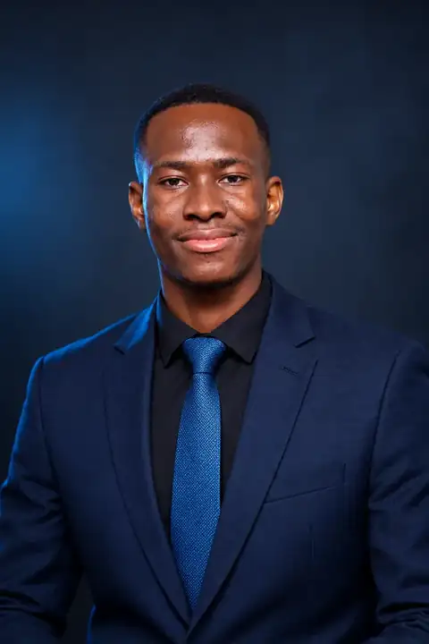

Data science & analytics
Data cleaning, exploratory analysis, statistical thinking, visualisation and communicating findings.
● EMERGING DATA SCIENTIST · MALAWI
Emerging Data Scientist / Software Developer / Data Analytics & Machine Learning
I build practical, data-driven tools that turn complex information into clearer decisions. My interests sit at the intersection of analytics, software engineering and applied machine learning.

01 / ABOUT
I’m interested in how data and technology can solve real problems, especially in the contexts and industries that shape everyday life in Malawi.
With a foundation in software development and a growing focus on data science, I enjoy exploring datasets, building applications and testing ideas that make information easier to act on.
I’m especially interested in financial services, agriculture, public health and decision-support systems—areas where thoughtful analytics can have meaningful impact.
↳ Understand the problem, work with the evidence, build something useful, then keep improving it.
02 / CAPABILITIES
Data cleaning, exploratory analysis, statistical thinking, visualisation and communicating findings.
Learning to develop, evaluate and apply models to practical prediction and decision-support problems.
Building web experiences and tools that connect data, interfaces and real user workflows.
03 / SELECTED WORK
FEATURED PROJECT / 001
Fantasy Premier League decision-support platform
A live Fantasy Premier League app for comparing players, planning squads and making transfer decisions, now being extended with a predictive machine learning layer for minutes, points, risk and captaincy.
＋ More projects and research explorations will be added as they develop.
04 / CONTACT
Open to conversations about data, software, research and meaningful collaboration.